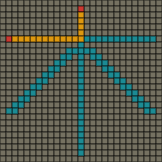

深さ優先探索
実行例
 実行結果を見る
ソースコード
通常版
TypeScript: app.ts
アニメーション版
TypeScript: app.ts
解説/アルゴリズム
深さ優先探索は木構造やグラフの探索を行うためのアルゴリズムです。
探索を開始するノードを選択し、そのノードに繋がっている別のノードを選択、そのノードから更に繋がっているノードを選択・・・と、ひたすら奥に向かって探索を進めます。
繋がっているノードが無くなった場合、元の道を戻り、別の方向を選び、また奥に向かって探索を行います。

上記のようなグラフを用意、探索を開始するノードを1とします。
ある方向に向かってひたすら探索をしたいので、今回は左側に向かって1-2-3と進みます。
3より奥のノードは存在しないので、2まで戻り、別のルートである4まで進みます。
4より奥のノードは存在しないので、1まで戻り、別のルートである5まで進みます。
5より奥のノードは存在しないので、1まで戻り、別のルートである6-7と進みます。
7より奥のノードは存在しないので、6まで戻り、別のルートである8まで進みます。
具体的なアルゴリズムは下記のとおりとなります。
- 開始ノードを配列に加えます。
- 配列から
末尾にあるノードを取り出します。 - 取り出したノードにつながっている
未探索のノードを全て配列の末尾に追加します。 - 配列の中身が空なら処理を終了、そうでなければ 2 に戻ります。
// ノード数
const n = 8;
// 各ノードに繋がっているノード番号
const edge = [[1, 2, 3], [4, 5], [], [6, 7], [], [], [], []];
// 探索を開始するノード番号を入れる
const stack = [0];
// 各ノードが探索済みかどうかを保持しておく配列
const seen: boolean[] = new Array(n).fill(false);
// 配列が空になるまでループ
while (stack.length > 0) {
// 配列の末尾にあるノードを取り出す
const cur = stack.pop();
console.log(cur);
// 取り出したノードに繋がっている、次のノード番号を列挙
for (let next of edge[cur]) {
// 次のノードが既に探索済みならスキップ
if (seen[next]) continue;
// 次のノードを探索済みにする
seen[next] = true;
// 配列の末尾に次のノードを追加
stack.push(next);
}
}
グリッドでの深さ優先探索
// マップ
let map: Cell[];
// 開始位置/目的位置
let sx: number, sy: number;
let gx: number, gy: number;
// 未探索ノードを格納する配列
let nexts: Point[];
// 開始地点から各ノードまでの距離
// 各ノードが未探索かどうかの判定に使用される
let dist: number[][];
// 未探索ノード配列に開始地点を登録
nexts = [{ x: sx, y: sy }];
// 各ノードまでの距離のデフォルト値の設定
// 極端に大きい値や-1のような、設定されることがないであろう値を入れておく
const INF = 1000000000;
dist = [];
for (let y = 0; y < H; y++) {
dist[y] = new Array(W).fill(INF);
}
// 開始位置までの距離を0にしておく
dist[sy][sx] = 0;
// 探索候補が無くなったら目的のノードが発見できず探索失敗となる
while (0 < nexts.length) {
// 配列から末尾要素のノードを取り出す
const next = nexts.pop();
const [cx, cy] = [next.x, next.y];
// 目的のノードなら探索成功。ループ処理を抜ける
if (cx == gx && cy == gy) break;
// 繋がっているノード位置を計算
for (let i = 0; i < 4; i++) {
const tx = cx + dx[i];
const ty = cy + dy[i];
// マップ外や通れないノード、すでに探索済みのノードならcontinue
if (!(0 <= tx && tx < W && 0 <= ty && ty < H)) continue;
if (getTile(tx, ty) != Cell.Floor) continue;
if (dist[ty][tx] != INF) continue;
// 開始ノードからの距離を更新することで、このノードは探索済みであることを示す
dist[ty][tx] = dist[cy][cx] + 1;
// 未探索ノード配列に追加
nexts.push({ x: tx, y: ty });
}
}
経路の出し方
ただ探索を行うのではなく、1-6-8 のように、開始～目的ノードまでの経路を出力したい場合があります。
prevs[index(nextNode)] = curNode;
その場合は連想配列などを用意しておき、今探索しているノードを、繋がっている次のノードのインデックスをキーとして保存しておくという方法があります。
prevs[2] = 1のノード;
prevs[3] = 1のノード;
prevs[4] = 1のノード;
たとえば 1 に繋がっているノードが 2,3,4 の場合は上記のように保存しておくと、2,3,4 のノードから前のノードである 1 にいつでもアクセスが可能となります。
// 連想配列を用意
prevs = [];
while (0 < nexts.length) {
const next = nexts.pop();
const [cx, cy] = [next.x, next.y];
if (cx == gx && cy == gy) break;
for (let i = 0; i < 4; i++) {
const tx = cx + dx[i];
const ty = cy + dy[i];
if (!(0 <= tx && tx < W && 0 <= ty && ty < H)) continue;
if (getTile(tx, ty) != Cell.Floor) continue;
if (dist[ty][tx] != INF) continue;
dist[ty][tx] = dist[cy][cx] + 1;
nexts.push({ x: tx, y: ty });
// 注目している地点(tx, ty)から前の地点(cur.x, cur.y)を参照するために連想配列に保存する
prevs[ty * W + tx] = { x: cx, y: cy };
}
}
グリッドでの経路保存例です。
let routes: Point[] = [];
// 目的地点から逆に辿る
let cx = gx;
let cy = gy;
while (true) {
// 逆に辿っているため配列に追加するときは前から要素を入れる
routes.unshift({ x: cx, y: cy });
// 開始地点まで来たら終了
if (cx === sx && cy === sy) {
break;
}
// 連想配列から前の地点を取り出す
const index = cy * W + cx;
const prev = prevs[index];
cx = prev.x;
cy = prev.y;
}
console.log(routes);
グリッドでの経路再現例です。
最短経路
深さ優先探索で得られる経路は、幅優先探索と違い、最短経路であると保証はされません。
ただし目的地までのルートが一つしかない場合は必然的に最短経路になります。